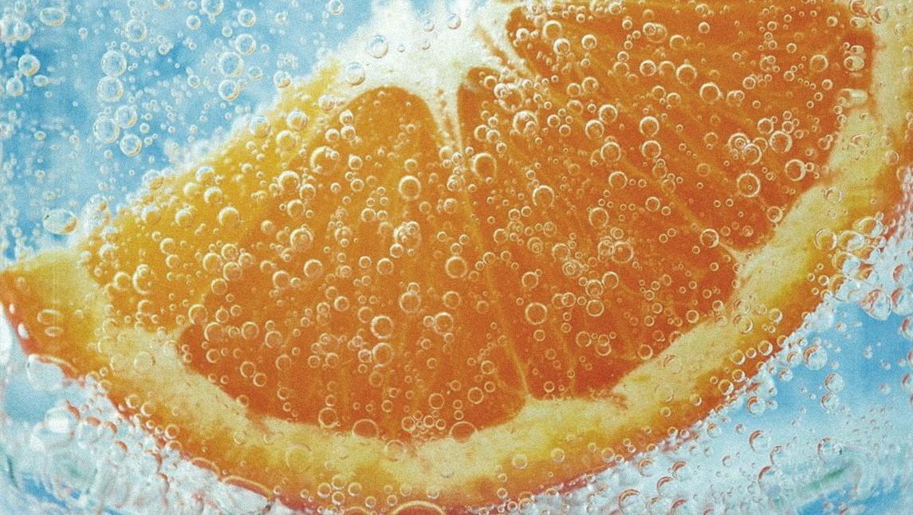

Al beber gaseosas, hay muchos problemas que surgen que podés evitar eliminando estos venenos líquidos para siempre.
Azúcar o fructosa de maíz. Estos son los edulcorantes más comunes que te volverán adicto de la misma manera que los consumidores de cocaína se vuelven adictos. El azúcar destruye tu metabolismo y conduce a la resistencia a la insulina, la diabetes y la inflamación, que pueden provocar la mayoría de las enfermedades crónicas de la actualidad y debilitarte frente a las enfermedades agudas, como el COVID.
Si tu gaseosa es dietética, el aspartame y otros edulcorantes artificiales engañarán a tu cerebro y metabolismo de una manera tan negativa que también creará adicción e inflamación.
Los productos químicos tóxicos dentro de la bebida son los que hacen que tu gaseosa sea colorida, huela así y dure mucho tiempo en la estantería. Estos productos químicos diezmarán las bacterias intestinales y dañarán la pared intestinal, lo que provocará un intestino permeable y crearán las condiciones para que las células cancerosas proliferen mientras debilitan el sistema inmunológico.
Los productos químicos de la lata o la botella de plástico, como el aluminio, el BPA y los ftalatos, se filtrarán en la bebida y terminarán en el torrente sanguíneo, bloqueando las enzimas y confundiendo su sistema hormonal, además de provocar cáncer. Si consumís gaseosas, eliminarlas bien podría ser la mejor medicina preventiva que puedas encontrar.